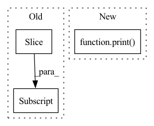

Pattern ID :38432

Before Change
if pred_model is not None:
pred_model.eval()
with torch.no_grad():
in_traj = in_traj[:context_frames].to(device).unsqueeze(dim=0) // [1, in_l, c, h, w]
pr_traj, _ = pred_model(in_traj, pred_frames, actions=actions) // [1, pred_l, c, h, w]
pr_traj = torch.cat([in_traj, pr_traj], dim=1) // [1, in_l + pred_l, c, h, w]
pr_traj_vis = dataset.postprocess(pr_traj.squeeze(dim=0)) // [in_l + pred_l, h, w, c]
After Change
with torch.no_grad():
pr_traj, _ = pred_model(in_traj, pred_frames, actions=actions) // [1, pred_l, c, h, w]
print(in_traj.shape, in_traj.min(), in_traj.max())
print(pr_traj.shape, pr_traj.min(), pr_traj.max())
pr_traj = torch.cat([in_traj, pr_traj], dim=1) // [1, in_l + pred_l, c, h, w]
pr_traj_vis = dataset.postprocess(pr_traj.squeeze(dim=0)) // [in_l + pred_l, h, w, c]
print(gt_rgb_vis.min(), gt_rgb_vis.max(), pr_traj_vis.min(), pr_traj_vis.max())
In pattern: SUPERPATTERN
Frequency: 4
Non-data size: 3
Instances
Fragment ID: 109741522
Project Name: ais-bonn/vp-suite
Commit Name: 73d8831f0de700411f5099a8ef9ebecf3104d875
Time: 2022-02-17
Author: boltres@ais.uni-bonn.de
File Name: vp_suite/utils/visualization.py
M Class Name: AnonimousClass
N Class Name: AnonimousClass
M Method Name: visualize_vid(9)
N Method Name: visualize_vid(9)
M Parent Class:
N Parent Class:
M File Name: vp_suite/utils/visualization.py
N File Name: vp_suite/utils/visualization.py
M Start Line: 108
M End Line: 120
N Start Line: 108
N End Line: 129
'>
Before Change
print("The number GPU {} < num {}".format(len(qresult), num))
else:
qresult_sort_index = np.argsort(-qresult[:, 1])
idex = [i for i in qresult_sort_index[:num] if qresult[i][1]/qresult[i][2] > self._args.proportion]
gpus_index = qresult[:, 0][idex]
gpus_memory = qresult[:, 1][idex]
After Change
qresult = qresult.astype("int")
if qresult.shape[0] == 0:
print("No GPU, Check it.")
else:
qresult_sort_index = np.argsort(-qresult[:, 1])
idex = [i for i in qresult_sort_index if qresult[i][1]/qresult[i][2] > self._args.proportion]
'>
Fragment ID: 109741523
Project Name: wilmerwang/scramble4gpu
Commit Name: f6b4e04c47f04e1a523718a8f6abc8b62bf2a157
Time: 2022-08-21
Author: 280458666@qq.com
File Name: scramble4gpu.py
M Class Name: GPUManager
N Class Name: GPUManager
M Method Name: choose_free_gpu(1)
N Method Name: choose_free_gpu(2)
M Parent Class: object
N Parent Class: object
M File Name: scramble4gpu.py
N File Name: scramble4gpu.py
M Start Line: 50
M End Line: 58
N Start Line: 52
N End Line: 60
'>
Before Change
selected_idx = torch.multinomial(torch.range(data.num_nodes),
size=n * (k + 1))
outlier_idx = selected_idx[:n]
candidate_idx = selected_idx[n:]
for i, idx in enumerate(outlier_idx):
cur_candidates = candidate_idx[k * i: k * (i + 1)]
After Change
candidate_idx = torch.randperm(data.num_nodes)[:k]
euclidean_dist = torch.cdist(data.x[idx].unsqueeze(0), data.x[
candidate_idx])
print(euclidean_dist)
max_dist_idx = torch.argmax(euclidean_dist, dim=1)
max_dist_node = candidate_idx[max_dist_idx]
data.x[idx] = data.x[max_dist_node]
'>
Fragment ID: 109741524
Project Name: pygod-team/pygod
Commit Name: 4f7d15f06d06ce2d3626ae14a07ff06078120e72
Time: 2023-03-27
Author: kayzliu@kays-mbp-2.ececs.uic.edu
File Name: pygod/generator/outlier_generator.py
M Class Name: AnonimousClass
N Class Name: AnonimousClass
M Method Name: gen_contextual_outliers(4)
N Method Name: gen_contextual_outliers(4)
M Parent Class:
N Parent Class:
M File Name: pygod/generator/outlier_generator.py
N File Name: pygod/generator/outlier_generator.py
M Start Line: 138
M End Line: 149
N Start Line: 137
N End Line: 145
'>
Before Change
start, end = source_data["start"], source_data["end"]
wav_path = os.path.join(self.wav_root, source_data["path"])
wave, sr = sf.read(wav_path)
wave = np.array(wave)[start: end]
wave = wave[None]
mixture = mixture + wave
if sources is None:
After Change
for _source in __sources__:
source, sr = sf.read(sources_data[_source]["path"])
source = source[start_idx: end_idx].mean(axis=1)
print(source.shape)
sources.append(sources)
return mixture, sources
'>
Fragment ID: 109741525
Project Name: tky823/dnn-based_source_separation
Commit Name: 550c9be6c6db5a89b57716fc49f1c95f913c05ad
Time: 2020-12-29
Author: 40362510+tky823@users.noreply.github.com
File Name: egs/dsd100/common/src/dataset.py
M Class Name: WaveDataset
N Class Name: WaveDataset
M Method Name: __getitem__(2)
N Method Name: __getitem__(2)
M Parent Class: DSD100Dataset
N Parent Class: DSD100Dataset
M File Name: egs/dsd100/common/src/dataset.py
N File Name: egs/dsd100/common/src/dataset.py
M Start Line: 50
M End Line: 74
N Start Line: 33
N End Line: 50